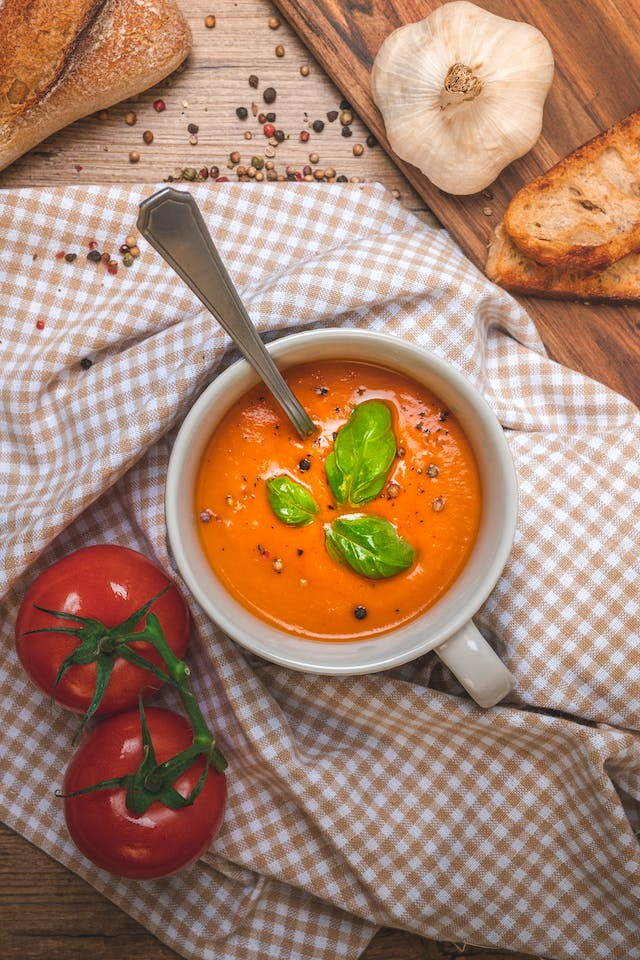

Jump to recipe

My entire life I've lived in the small town of Springdale. Springdale reminds me of everything it means to be human, friends, family, and of course, food. In the fall months soup becomes the number one thought in most of me neighbours heads. As my great-great grandmother used to say: a nice warm, creamy tomato soup can sure any sickness! Every year town hall would hire Ladle Larry to cook his famous soup recipe and it's been the thing I've missed most about Springdale. In my efforts to get a taste of home wherever I am in the world, I have found myself on a quest for the elusive "Grandma's Elixir." Legends whispered through the aromatic alleys suggested that only a chosen few held this coveted recipe, and my taste buds yearned for the thrill of its mysterious flavors. After countless polite inquiries left me with nothing but empty ladles, my relentless pursuit led me to Ladle Larry himself. Rumor had it he guarded the sacred recipe with unwavering secrecy. Determined to unravel the mysteries of Grandma's Elixir, I decided to attend his renowned Soupology seminar. The seminar was a whimsical journey through the art of soup-making. Ladle Larry, with a ladle in hand and a twinkle in his eye, passionately shared the ancient secrets of simmering pots and harmonizing flavors. As the hours passed, my patience wore thin, and my craving for the legendary elixir intensified. In a moment of culinary madness, I concocted a daring plan to acquire the prized recipe. With swift precision, I managed to swipe Larry's ladle – the symbolic key to unlocking Grandma's Elixir. The room fell silent as Larry, sensing foul play, locked eyes with me. I felt a mixture of guilt and anticipation as he approached. A tense exchange followed, during which I confessed my audacious pursuit of the coveted recipe. Surprisingly, Ladle Larry didn't react with anger. Instead, he admired my boldness and recognized the true passion that fueled my quest for the perfect soup. Larry explained that Grandma's Elixir wasn't just a recipe; it was a test of character and dedication to the culinary arts. Impressed by my commitment, Larry decided to share the long-guarded secret. With a twirl of his ladle and a mischievous grin, he unfolded the mystical steps to crafting Grandma's Elixir. The room filled with the aromatic essence of the secret blend, and the ladle, once a tool of my deception, now became a symbol of our unexpected camaraderie. Today, I share this recipe with whomever may want it. I think in a world as harsh as this, everyone could use a bit of magic, and Grandmas Elixir is just the way to get some. By sharing this recipe, I hope it brings as together and reaches those who need it.
To make this recipe you don’t need Larry’s ladle or any special equipment, just a pot, food mill,a bowl, a stockpot, a spoon, a whisk, and a knife. As for the ingredients, it’s all made with stuff one may have around the house! How convenient! As good as it is, this recipe is deceivingly simple and perfect for beginner chefs, or people who have been cooking their entire life. As for a pairing, I suggest a simple grilled cheese. Nothing beats the tomato soup and grilled cheese combo!